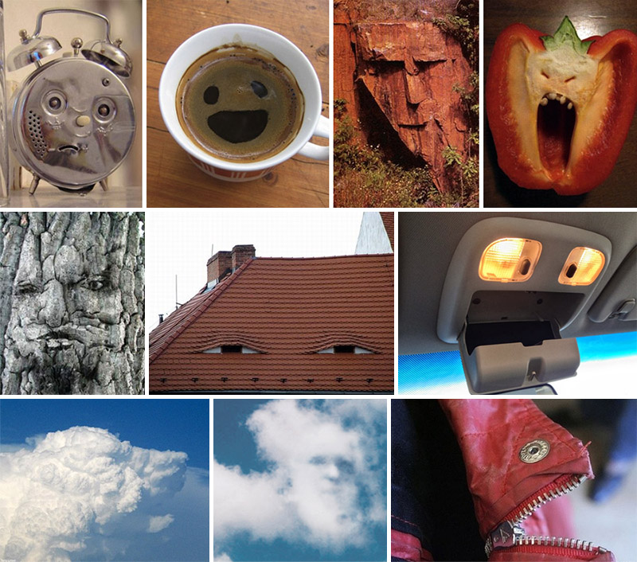
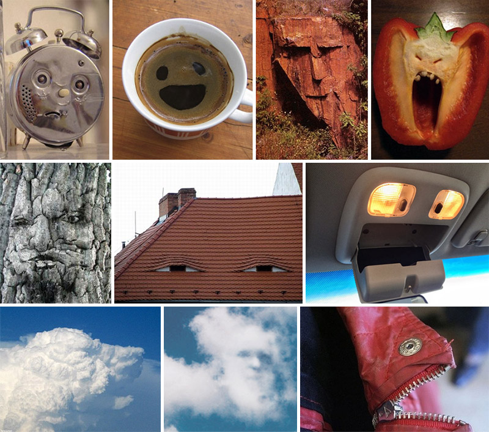

🦜📊🤖🖥️⚖️💔
Loros estocásticos,
injusticia algorítmica
y otros retos de la IA del siglo XXI
Juan Camilo Espejo-Serna
Facultad de Filosofía y Ciencias Humanas
Universidad de la Sabana
La última vez que hicieron algo de
filosofía
¿Cuándo fue?
Santiago Bellomo propone una reflexión FILOSÓFICA sobre el sentido de la educación en la era de la Inteligencia Artificial.
Temas
- Filosofía de la IA
- Loros estocásticos
- Injusticia algorítmica
1
Filosofía de la IA
¿Cuándo comienza la filosofía de la IA?
Para eso tenemos un juego
2
Loros estocásticos
La repetición del loro no es simplemente un juego; tiene un propósito pues su capacidad de imitar resulta práctica y útil.
ok .... y ¿estocástico?
¿Qué rol deben tener los loros estocásticos en nuestros espacios de aprendizaje?
3
Injusticia algorítmica
 
